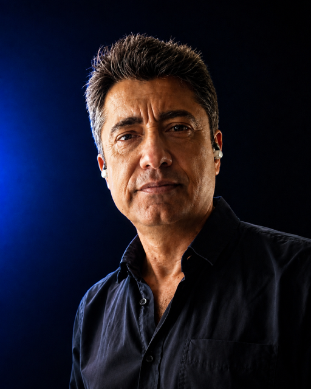

BIOGRAPHY
MR. YEBRA is the personal project of musician and bassist Paco Yebra, focused on creating electronic music with a solid foundation in Melodic Techno and Progressive House.
After years of experience as a live musician, the project emerges as a space for personal exploration, where groove, melodic layers, and progressive structures coexist, blending club energy with attentive listening.
MR. YEBRA develops a distinctive sound within contemporary electronic music, moving between the dancefloor and introspection, with productions designed both for live performance and for a complete listening experience.
